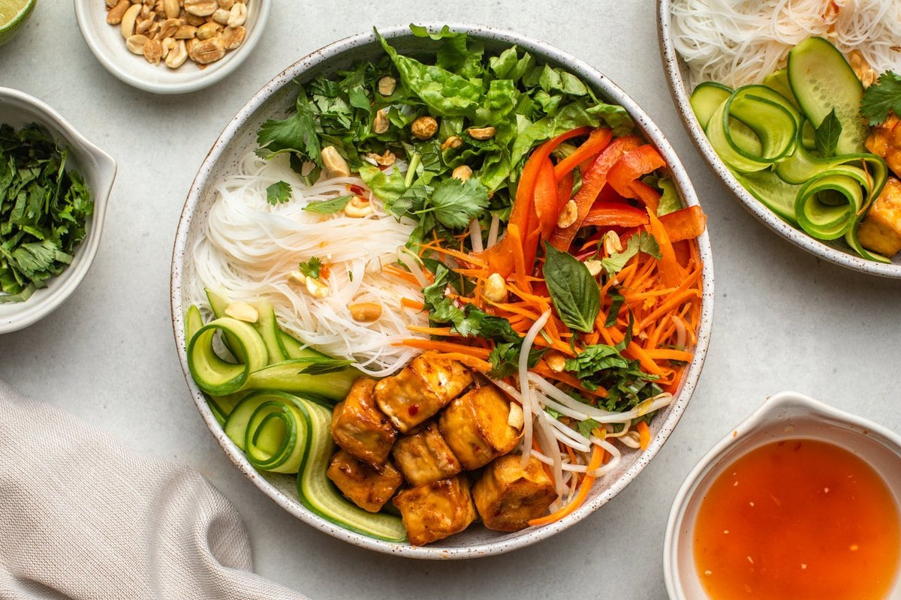

Vietnamese Noodle Bowl

Figure 1: A seriously scrumptious looking bowl of noodle.
This recipe has been in the family for years! JK. Actually, my family has never handed down or even had a recipe to hand down.
I have accumulated all my recipes on my own. Just kidding, again. I don't accumulate recipes. I just look them up each time. It really is a pain.
So, this recipe project might just be the thing I need! Maybe I can finally collect all my favorite recipes here.
Ingredients
For the Dressing
- 1/4 cup rice vinegar
- 3 tablespoons lime juice
- 3 tablespoons coconut or date sugar
- 2 tablespoons mushroom soy sauce
- 2 tablespoons freshly grated lemongrass
- 1 clove garlic
- 1 to 2 bird's eye chilies
- 2 to 3 dashes Maggi seasoning
- 1 tablespoon water
For the Bun Chay
- 8 ounces thin rice noodles
- 2 carrots
- 1 large bell pepper
- 1 cup English cucumber half moons
- 1 cup cilantro stems and leaves
- 1 cup Thai basil leaves
- 1 cup mint leaves
- 1 cup chopped peanuts
- Lime wedges for serving
For the Caramelized Tofu
- 1 tablespoon peanut oil
- 14 ounces firm tofu
- 2 teaspoons mushroom soy sauce
- 1 tablespoon sesame oil
- 1 tablespoon coconut or date sugar
Steps
- Set a large pot of water on the stove to boil for cooking the noodles.
- While the water is heating, whisk the dressing ingredients together in a small bowl. Set aside to infuse.
- After the water is boiling, cook the noodles according to package directions; rinse with cold water, drain well, then divide into four serving bowls.
- Heat one tablespoon of peanut oil in a large skillet set over medium heat. Add the tofu pieces and fry until golden brown, about 5 to 7 minutes on both sides. While the tofu is frying, stir the mushroom soy sauce, sesame oil, and sugar together in a small bowl until the sugar has dissolved.
- Once the tofu is browned, pour this mixture into the pan. Allow the sauce to cook in the pan for 1 to 2 minutes, until it begins to thicken. Flip the tofu to ensure the sauce coats and sticks to each side. Cook for another minute or so, until the tofu is caramelized and sticky. Transfer the tofu to the noodle bowls.
- Top the noodle bowls with julienned carrot, sliced bell pepper, cucumber half moons, herbs, and peanuts. Pour a quarter of the prepared dressing over each bowl. Serve at once.
SOURCE: The Wanderlust Kitchen